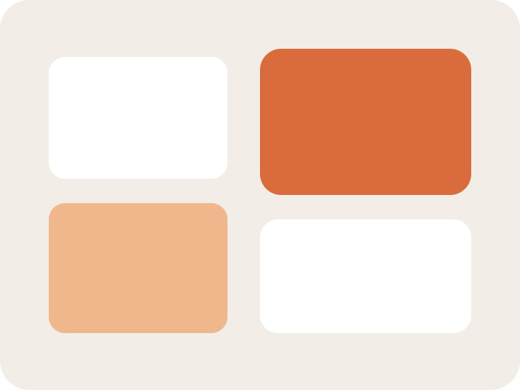

SL
Северная Линия
Истории брендов: спокойные формы, живые тексты и визуальные метки.
Здесь собраны короткие истории о том, как рождается визуальный стиль. Фокус на деталях, атмосфере и ощущении теплоты.
Мини-заметки
— История «Северный чай» — упаковка и паттерн.
— «Городская тихая» — редизайн вывесок.
— «Лаборатория света» — навигация и цвет.
Галерея



Форматы работы
— Быстрый концепт за 3 дня.
— Полный ребрендинг за 3–4 недели.
— Поддержка команды после запуска.
Нужен визуальный рассказ?
Оставьте задачу — соберу структуру и предложу форму, которая подойдёт вашему бренду.